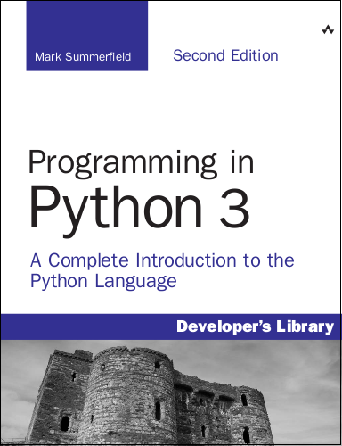

A sample chapter is available free from InformIT—click "Sample Content" and then "Download the sample pages".
This book teaches you how to write programs using Python 3, the most up to date, powerful and flexible version of Python yet released. Python 3 introduces many new idioms compared with Python 2 that make programming with it easier and at the same time helps produce clearer and more maintainable code. Python 3 is a superb very high level language, that is very easy to learn and use even by relatively inexperienced programmers. And once learned, Python 3 does not impose limits or restrictions, instead offering incredibly powerful and advanced facilities for those who want to learn and use them. Python runs on Windows and most Unix-like operating systems such as Mac OS X, BSD, and Linux.
The book will be useful to people who program professionally as part of their job, whether as full-time software developers, or those from other disciplines, including scientists and engineers, who need to do some programming in support of their work. It will also prove ideal for those Python 2 programmers who need to migrate (or prepare to migrate) to Python 3. The book is also suitable for students—the only prerequisite is some basic knowledge of programming in any language, for example, Basic, Java, or JavaScript, or of course Python itself.
The book focuses exclusively on Python 3 to avoid the risk of confusion with earlier versions. However, existing Python 2 programmers might find my highly condensed Moving from Python 2 to Python 3 document (4 pages, PDF, 676K) to be a helpful companion.
The book is 648 pages, and is published by
Addison-Wesley
Professional.
The book can be bought from other online and local book stores.
Previews are available from
Safari, and
the Introduction, all of Chapter 13 (Regular
Expressions), and the index is available from
InformIT
(click the Sample Content tab and then the Download the sample
pages link).
Only the printed editions are definitive—although available in electronic formats, "ebooks" usually restrict your rights, and they are often retypeset which can introduce errors. A legal PDF version is available from InformIT. Translations are arranged by the publisher and their quality can vary considerably.
This second edition has been fully revised and updated to cover both Python 3.0 and Python 3.1 (and is useful for all Python 3.x versions), and extended with new chapters on debugging, testing, and profiling, and on parsing (with coverage of the third party PyParsing and PLY modules), as well as a new section on coroutines in the Advanced chapter. After mastering this book, read Python in Practice to progress further.
The book's examples are available in py3book31.tar.gz (293 KB) or py3book31.zip (403 KB).

See also my Python Programming Tips.
For more information on Python 3 see the Python website.
Like all my books and most of my other writings, this book was written using the Lout Typesetting System.
Your Privacy •
Copyright © 2006 Mark Summerfield.
All Rights Reserved.